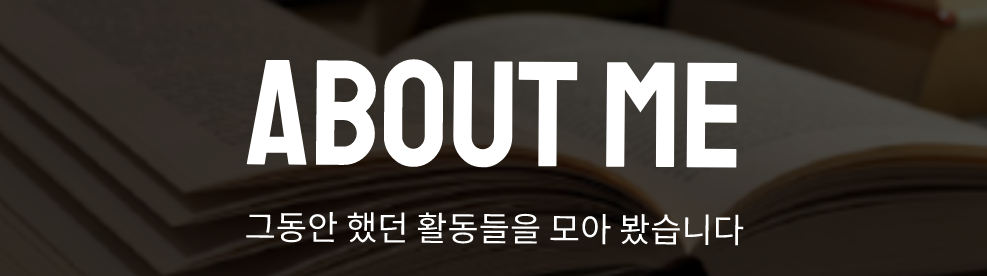

Arduino (2015)
고등학교 2학년에 프로그래밍 동아리에 가입하여
아두이노의 전반적인 기초 및 실습을 학습하였습니다.
네트워크 보안 연구실 (2020 ~ )
공주대학교 컴퓨터공학부 소프트웨어전공 소속 연구실인
네트워크 보안랩(Network Security Lab.)에서 활동하였습니다.
Android Studio (2021)
방학 기간 동안 Java와 안드로이드 스튜디오를 이용하여 소속 랩실(네트워크 보안랩)의 모바일 게시판 어플리케이션의 프론트엔드 파트를 개발하였습니다.
자세한 사항은 Project 탭에 기술하였습니다.
리눅스마스터 2급 (2021)
리눅스 마스터 2급을 공부하여 취득하였습니다.
프로그래머스 월간 코드 챌린지 시즌2 (2021)
프로그래머스 월간 코드 챌린지 시즌2 (코딩 테스트)에 참여하였습니다
딥 러닝 (2021.4 ~ )
공주대학교 컴퓨터공학부 소프트웨어전공의 학부융합 프로젝트의 일환으로 Python을 이용한 딥 러닝을 공부하였습니다
ICT 이노베이션 스퀘어 블록체인 교육 (2021.5 ~ 2021.6)
ICT 이노베이션 스퀘어의 블록체인 응용서비스 개발 전문가 양성과정에 참여했습니다.
학과 커리큘럼 외적으로 공부한 것만 작성하였습니다
그 외에 학과 커리큘럼으로 C, C++, Python, R언어, SQL, 3ds Max등을 학습하였습니다.